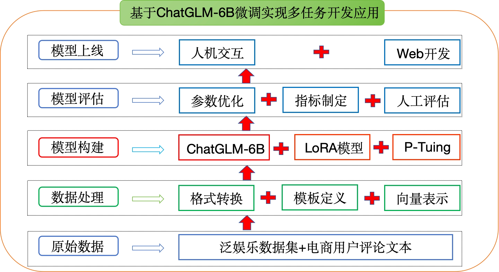
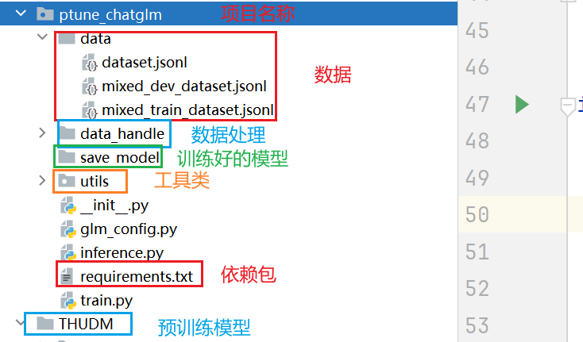

🧭 项目简介、ChatGLM-6B 架构与环境配置
工程实践提示：示例中的模型地址、数据库账号和密钥均应通过环境变量或独立配置文件注入；部署前还需补充权限控制、输入校验、超时重试、日志脱敏、来源引用与离线评估。
学习目标
- 了解项目背景
- 理解ChatGLM-6B模型架构原理
- 安装项目必备的工具包
- 了解整体项目架构
1. 项目简介
LLM（Large Language Model）通常拥有大量的先验知识，使得其在许多自然语言处理任务上都有着不错的性能。但，想要直接利用 LLM 完成一些任务会存在一些答案解析上的困难，如规范化输出格式，严格服从输入信息等。因此，在这个项目中我们对大模型 ChatGLM-6B 进行 Finetune，使其能够更好的对齐我们所需要的输出格式。
2. ChatGLM-6B模型
2.1 模型介绍
ChatGLM-6B 是清华大学提出的一个开源、支持中英双语的对话语言模型，基于 General Language Model (GLM) 架构，具有 62 亿参数。该模型使用了和 ChatGPT 相似的技术，经过约 1T 标识符的中英双语训练(中英文比例为 1:1)，辅以监督微调、反馈自助、人类反馈强化学习等技术的加持，62 亿参数的 ChatGLM-6B 已经能生成相当符合人类偏好的回答（目前中文支持最好）。
相比原始Decoder模块，ChatGLM-6B模型结构有如下改动点：
- embedding 层梯度缩减：为了提升训练稳定性，减小了 embedding 层的梯度。梯度缩减的效果相当于把 embedding 层的梯度缩小了 10 倍，减小了梯度的范数。
- layer normalization：采用了基于 Deep Norm 的 post layer norm。
- 激活函数：替换ReLU激活函数采用了 GeGLU 激活函数。
- 位置编码：去除了绝对位置编码，采用了旋转位置编码 RoPE。
2.2 模型配置(6B)
| 配置 | 数据 |
|---|---|
| 参数 | 6.2B |
| 隐藏层维度 | 4096 |
| 层数 | 28 |
| 注意力头数 | 32 |
| 训练数据 | 1T |
| 词表大小 | 130528 |
| 最大长度 | 2048 |
2.3 硬件要求(官网介绍)
| 量化等级 | 最低GPU显存（推理） | 最低GPU显存（高效参数微调） |
|---|---|---|
| FP16(无量化) | 13GB | 14GB |
| INT8 | 10GB | 9GB |
| INT4 | 6GB | 7GB |
注意：显存的占用除了跟模型参数大小有关系外，还和文本支持最大长度有关
2.4 模型特点
-
优点
- 1.较低的部署门槛： INT4 精度下，只需6GB显存，使得 ChatGLM-6B 可以部署在消费级显卡上进行推理。
- 2.更长的序列长度： 相比 GLM-10B（序列长度1024），ChatGLM2-6B 序列长度达32K，支持更长对话和应用。
- 3.人类类意图对齐训练
-
缺点：
- 模型容量小，相对较弱的模型记忆和语言能力。
- 较弱的多轮对话能力。
3. 环境配置
3.1 基础环境配置：
本次环境依赖于AutoDL算力：https://www.autodl.com/home
- 操作系统: ubuntu22.04
- CPUs: 14 core(s)，内存：100G
- GPUs: 1卡， A800， 80GB GPUs
- Python: 3.10
- Pytorh: 2.5.1
- Cuda: 12.4
- 价格：5.98元/小时
3.2 安装依赖包：
- 创建一个虚拟环境，您可以把
llm_env修改为任意你想要新建的环境名称：
conda create -n llm_env python=3.10
- 激活新建虚拟环境
conda activate llm_env
注意： 如果激活失败，则先运行 conda init，然后退出终端，重新打开一个终端。
- 安装相应的依赖包：
-- 成功切换到llm_env后安装 pip install -r requirements.txt
requirements.txt文件内容如上所示Textprotobuf>=3.19.5,<3.20.1 transformers==4.33 icetk cpm_kernels streamlit==1.18.0 matplotlib datasets accelerate>=0.20.3 packaging>=20.0 psutil pyyaml peft==0.3.0
3.3 预训练模型下载：
- 创建目录
mkdir -p /root/autodl-tmp/llm_tuning/THUDM/chatglm-6b cd /root/autodl-tmp/llm_tuning/THUDM/chatglm-6b
- 安装modelscope
pip install modelscope
- 下载chatglm-6b
modelscope download --model ZhipuAI/ChatGLM-6B --local_dir ./
- python文件下载
如果configuration_chatglm.py、modeling_chatglm.py、quantization.py、tokenization_chatglm.py文件没有下载成功，则手动下载，然后添加到chatglm-6b的文件夹中。
下载位置：https://modelscope.cn/models/ZhipuAI/ChatGLM-6B/files
4. 项目架构
项目架构流程图：

项目代码架构图：

小结总结
本章节主要介绍了项目的背景、项目的适配环境以及项目的整体架构流程，以此来方便我们整个项目的开发。